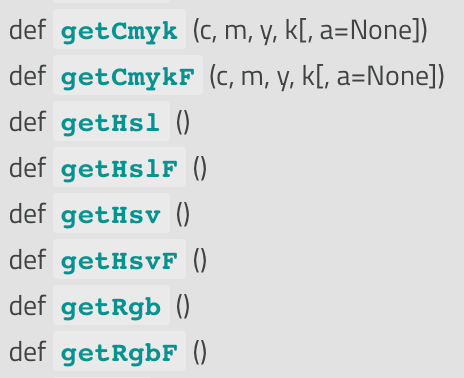

import pip
pip.main(['install', 'colorio'])3 Анализ цветовых щкал
Одна из ключевых задач картографической визуализации — обеспечить наглядность и равномерность цветовых шкал, используемых при визуализации данных. Использование неперцептивных цветовых пространств часто ведет к тому, что визальные различия между соседними градациями шкалы могут значительно варьироваться в пределах шкалы. В данном упражнении мы научимся извлекать уже заданную шкалу из слоя и оценивать ее цветовую равномерность.
3.1 Установка модуля colorio
Перцептивная оценка цветовых градиентов требует вычислений в перцептивных цветовых пространствах. При этом стандартный класс QColor в QGIS ожидаемо поддерживает только общеупотребительные пространства RBG, CMYK, HSL и HSV:

Для преобразования из этих пространств в перцептивные можно использовать библиотеку colorio . Чтобы ее установить в Python при QGIS введите в консоли Python следующие команды:
После этого можно подключить требуемые библиотеки в начале скрипта:
import numpy as np
import colorio3.2 Извлечение цветовой шкалы
Для того чтобы выполнить анализ равномерности цветовой шкалы, необходимо получить цвета всех её классов. Для этого необходимо выполнить следующую последовательность действий:
- Выбрать активный слой (
layer = iface.activeLayer()). - Получить его рендерер (
renderer = layer.renderer()). - Получить список интервалов рендерера (
ranges = renderer.ranges()). - Извлечь цвет для каждого интервала и наполнить этими цветами массив.
Если известен список интервалов, то единичный можно получить просто по индексу. Печатается он довольно наглядно:
{>>> ranges[0]} <QgsRendererRange: 0 - 364700 (0 - 364700)>
Доступ к цвету интервала можно получить через символ и его цвет:
{>>> ranges[0].symbol().color()} <PyQt5.QtGui.QColor object at 0x194440dd0>
В таком виде он, конечно, не очень удобен для последующего анализа. Поэтому можно воспользоваться одной из вышеприведенных функций для получения массива цветов:
{>>> ranges[0].symbol().color().getRgb()} (255, 255, 255, 255)
Можно теперь объединить все эти операции в одну, получив массив цветовых массивов. Для удобства каждый цвет целесообразно преобразовать в массив numpy и привести его у типу с плавающей точкой:
colors = [np.array(r.symbol().color().getRgb()).astype(float) for r in renderer.ranges()]